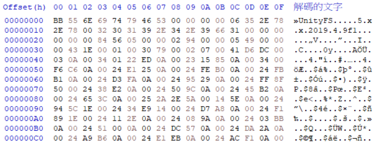
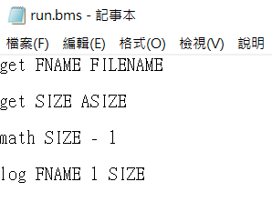
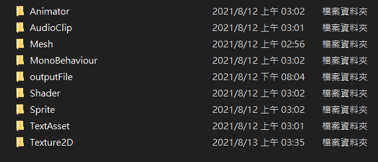
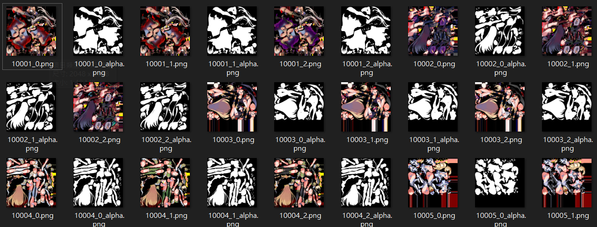
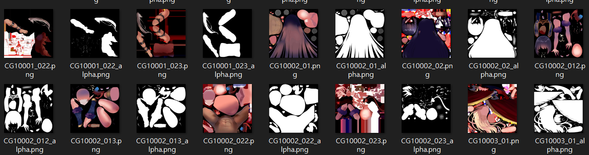
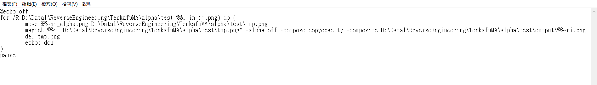
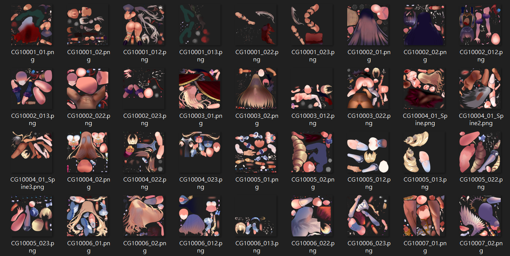
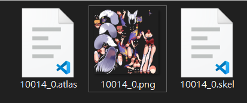
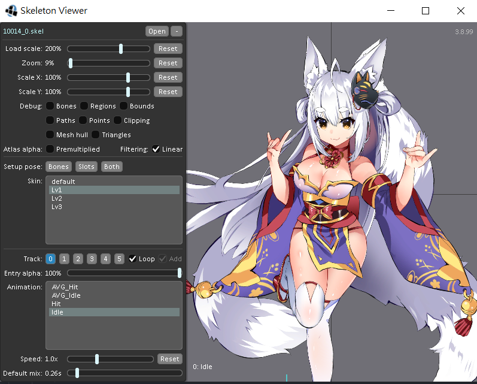
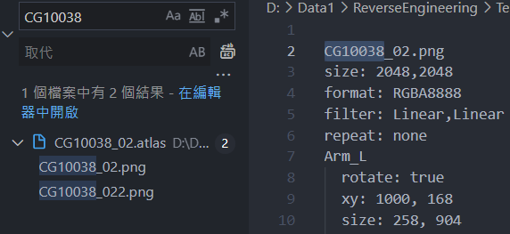

天下布魔初次拆包(舊文)
沒人拆，那就由我當第一個
最近真的拆上癮了，朋友建議我去拆黃油天下布魔，當然也沒什麼好拒絕的就直接上了，這種遊戲當然不會在Play商店上架，所以直接去官網抓APK包直接安裝，安裝過程很順利，CG圖也很色(?)，整個資料包都下載完後就可以直接進入最主要的環節了。起手式把整個資料包丟進Assts Studio，讀不到文件，官方一定有做混淆。懶人如我先上網查教學，結果沒有拆這遊戲的資料，好吧，就當第一人吧，直接上HxD一探究竟。

wow，看起來蠻好解的，簡單來說就是增加一組位元到檔案頭，藉由這種方式來混淆解包軟體。(順帶一提，每個檔案頭都不一樣，應該是亂數產生)
檔案那麼多，當然要寫個批量腳本拉。這邊一樣用QickBMS來寫，很簡單，短短幾行就結束了。這腳本只是用來去除頭部的混淆位元而已，當然簡單XD

不會用QickBMS的可以看我上一篇文章
解完丟Assts Studio，很合理的可以看到資訊了，直接全部倒出來。解出來會發現在AudioClip資料夾內，官方很好心的連加密都不做，直接全部WAV檔讓你聽了XD，來分析一下其他的資料夾吧。

(忽略outputFile，那是我自己測試的資料夾)Animator是動畫的相關文件，沒研究，畢竟不是我的目標;Mesh是3D object或用來存放一些2D圖片的合成方式，老實說，看到檔案那麼少就一定是前者了;MonoBehaviour是Unity運行文件必走的類，在這邊暫時也用不到;Shader是渲染，除非你要完整還原遊戲畫面，不然也不需要;Sprite是用來在3D環境中建構出2D物件用的，看過檔案就可以知道。剩下的TextAsset以及Texture2D就是這次主要要講的東西。
先看Texture2D，其實就是圖片，所有的美術圖以及任何有關圖的東西都在這，大部分都能識別，主要不能識別的就是角色圖以及CG圖。


非常明顯的，有一張原圖以及一張Alpha通道圖，這邊要處理的話要先合成兩張圖。上網搜尋後找到了一個圖片工具叫做
magick
，下載後安裝，找到通道圖合成指令，就可以利用cmd進行合成了，指令如下:
"圖片路徑 圖片的alpha通道圖路徑 -alpha off -compose copyopacity -composite 輸出路徑"
cmd進去跑指令就行了，可是一樣太多一個一個跑會累死，所以我寫了一個批量(bat)指令。

簡單來說就是先把所有要合成的文件丟到for後面的路徑，並且在執行時將通道圖改為tmp.png並跟他前面的圖片做magick指令，使用時記得要更改絕對路徑。

圖片就全部合成完成了!礙於CG圖太兒童不宜了，等等會示範如何閱覽角色的動態，CG會稍微提到不過不會放圖。
翻開TextAsset文件可以看到一堆.atlas.prefab或.skel.prefab字尾的檔案，查了查發現這是spine文件的檔案，並不是一般的L2D。這邊的prefab檔案是Unity的文件集合，實測直接去除也不會有引響，Unity本身也讀不到prefab中資料，原因不明。Spine文件需要atlas(貼圖位置)以及skel(骨骼模型)檔，所以直接將prefab後綴去除即可。然後找到相對應的圖片檔，放在同一個資料夾。

再來會用到專門觀看Spine文件的工具，這邊我選用
Skeleton viewer
來看，這工具需要java環境，記得把java裝一裝，下載後會有一個jar檔，直接打開。打開後直接選擇開啟資料夾內的skel檔案就好了。

記得不要選defalt，角色身體表情會不見，基本上動作部分只有下面的兩個，待機idle跟被打到hit這兩種動作，上面的等級則是衣服破的程度(
CG也是比照辦理，可是CG會用到很多圖，這時候就可以打開atlas檔案，就可以找到需要的文件。

上圖就是用了兩張圖片。
差不多就這樣，這遊戲沒什麼需要拆得部分，拆完這些色色的CG對我來說也沒什麼用途，想跟我拿可以直接找我。自己拆比較快吧(
之後考慮把AzurLane拆包過程丟上來，雖然沒什麼技術成分就是了
by.SeaotterMS on 2022/7/12